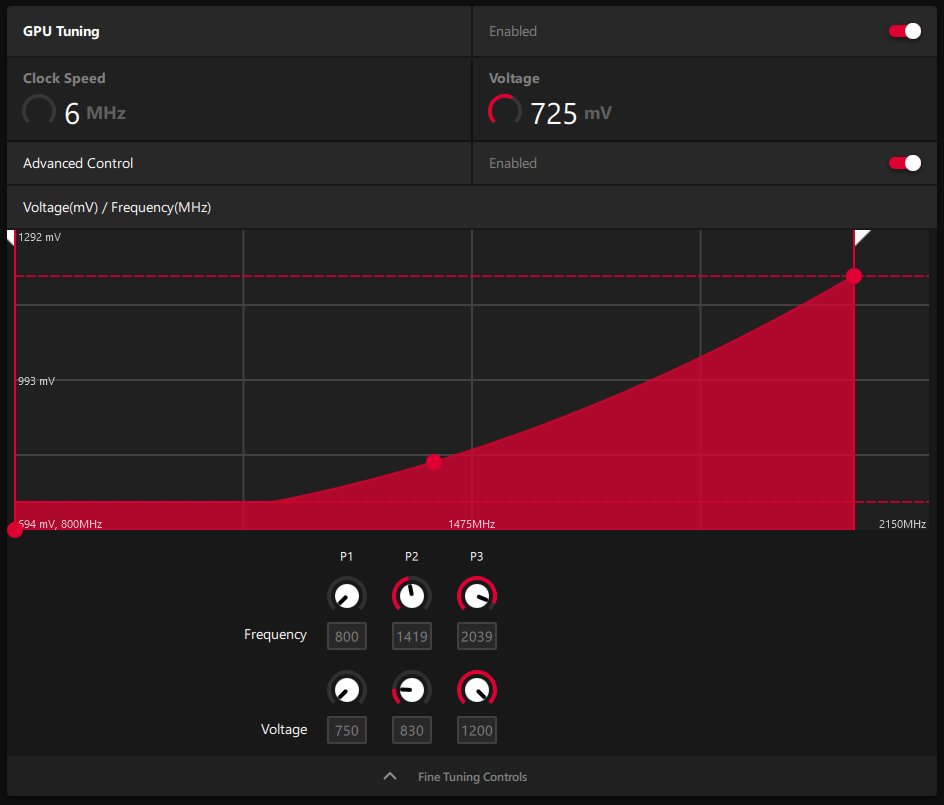
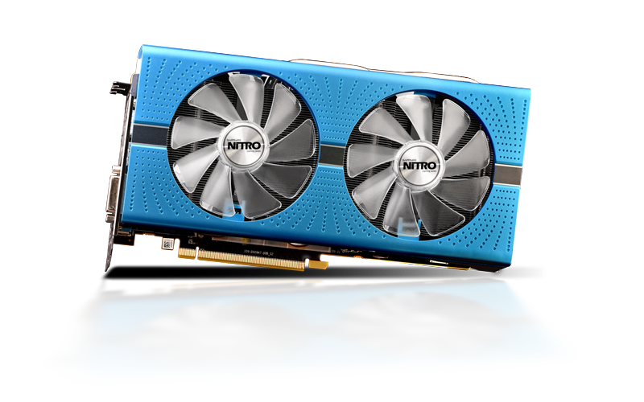
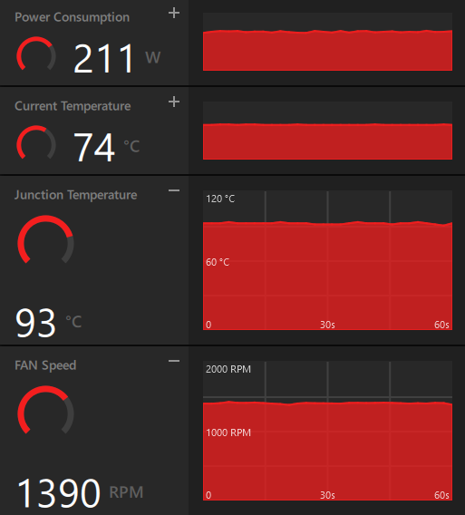
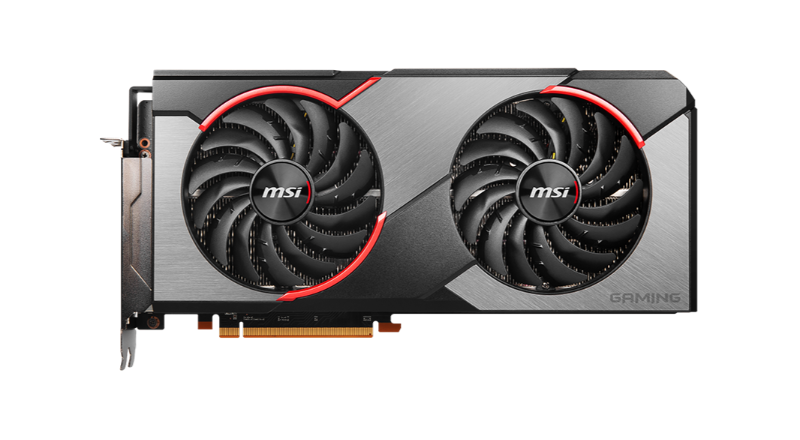

Overclock sempre foi um tópico fascinante para mim. A ideia de conseguir extrair mais performance de um componente que você já possui de forma gratuita é extremamente atraente, porém existem riscos envolvidos e é necessário ter responsabilidade para evitar danificar tais componentes.
Em resumo, overclock se baseia em aumentar a frequência de operação de um dispositivo eletrônico, mais comumente processadores, placas de vídeo, memória RAM e até monitores. Vamos focar essencialmente em placas de vídeo, pois elas são relativamente simples de manusear em tempo real.
Inicialmente vamos esclarecer alguns termos:
Existem diversas ferramentas de overclock, sendo a maioria delas gratuita. As mais utilizadas são o MSI Afterburner e o AMD Wattman (que não é mais chamado disso, mas será aqui por conveniência). O processo se resume a aumentar os clocks gradativamente e caso aconteça um crash, aumente a voltagem (caso possível) ou diminua os mesmos.
Pode-se dizer que há três fatores que governam o potencial de overclock da sua placa: capacidade de refrigeração, qualidade ou "binning" do chip e o seu próprio bom senso. Caso a sua placa tenha um dissipador pequeno (a parte de metal que absorve o calor do chip) ou apenas uma ventoinha, é natural inferir que ela não terá a mesma capacidade de se resfriar se comparada a uma placa com um dissipador maior e mais ventoinhas; por isso versões mais "premium" de uma mesma placa são vendidas por parceiras das fabricantes, as AIB's. O segundo fator é a qualidade do próprio chip: devido a diferenças e tolerâncias na fabricação dos wafers, alguns chips terão microdefeitos que atrapalham no seu funcionamento e geralmente requerem voltagens maiores para operar num determinado clock.
O terceiro fator se resume a reconhecer os riscos envolvidos no processo. É bem possível que você consiga um overclock interessante sem tocar na voltagem da sua placa, porém é tentador aumentá-la para conseguir ainda mais performance. O problema é o fato de que quanto maior é a voltagem utilizada, maior estresse é colocado no chip e nos módulos reguladores de voltagem (VRM's), e esses componentes podem não tolerar aumentos significativos. Em geral, é perfeitamente seguro fazer overclock em qualquer componente caso a voltagem permaneça nos valores padrões e o power limit não seja estendido.
Pessoalmente, eu já tive três placas de vídeo: uma GTX 750 Ti, uma RX 580 e uma RX 5700 XT. A primeira, que era um modelo single fan da Zotac, era capaz de um aumento impressionante de 200 MHz no núcleo e 650 MHz na memória; eu cheguei até a modificar a bios dela para aumentar o power limit de 38.5 W para 65 W. A segunda, que é o modelo azul da imagem acima, já veio de fábrica com clocks muito altos e não possuía muito espaço sobrando para overclock, mas mesmo assim consegui rodá-la com +55 MHz no núcleo e +150 na memória, e também era possível reduzir um pouco a latência da mesma. Não tive muito tempo para experimentar com a terceira placa, mas ela consegue rodar com pelo menos mais 50 MHz no núcleo e +50 na memória.
Você deve ter notado um padrão: ignorando os três valores das memórias, que não são diretamente equivalentes, não foi possível aumentar tanto a frequência do núcleo, por que? Atualmente, não só as placas de vídeo, mas processadores também, são projetados para atingir a maior frequência possível caso o usuário consiga fornecer refrigeramento suficiente, realizando basicamente "overclocks automáticos". Tal fator é responsável pela gradativa diminuição da popularidade do overclocking, além de maior preocupação em volta do consumo de energia e geração de calor por parte dos componentes.
É inegável que o processo de overclock seja divertido e encontrar os limites de um componente e extrair o máximo de performance possível é tentador, mas isso não é (e talvez possa-se dizer que nunca foi) necessário. O que está na moda hoje em dia é fazer undervolt, ou seja, reduzir a voltagem de algum componente para reduzir temperaturas e consumo de eletricidade e impedir ou reduzir o throttling de componentes, o que tem benefícios bem mais tangíveis e práticos. Eu sempre fui fã de fazer overclock, mas hoje em dia não vejo mais a justificativa em gerar mais 40 watts de calor que vão direto pro ambiente em troca de 5% ou menos de performance.
Concluindo, overclock ainda vale a pena? Em alguns casos, sim, mas na maioria deles é bem mais sensível fazer undervolt; que também pode melhorar a performance e evitar throttling, o que exploraremos em detalhe num momento futuro.